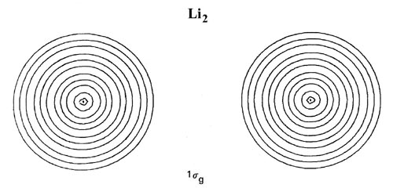
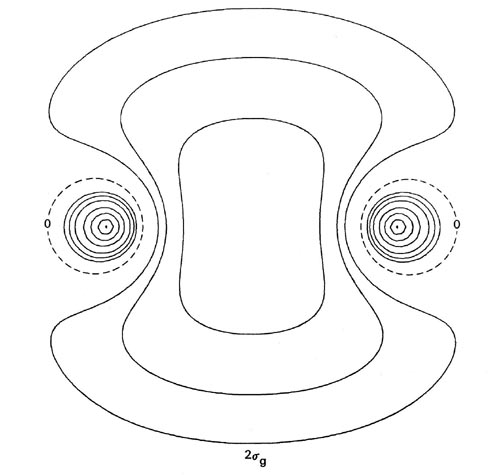
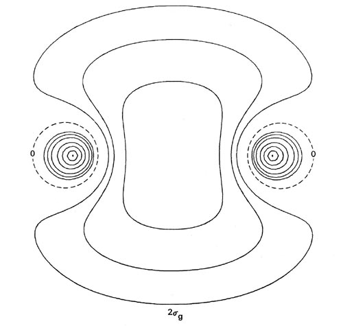
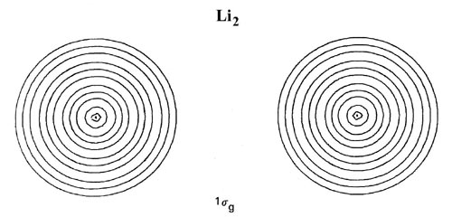
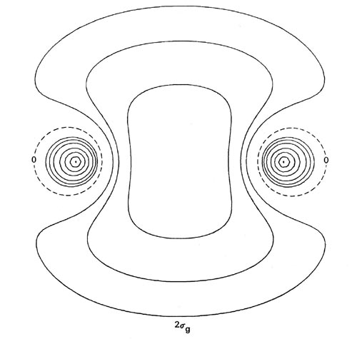

 


Fig. 8-7. Contour maps of the doubly-occupied 1sg, 1su and 2sg molecular orbital charge densities for Li2 at R = 5.051 au, the equilibrium internuclear separation. Click here for contour values. The total molecular charge distribution for Li2 is shown in Fig. 7-3.